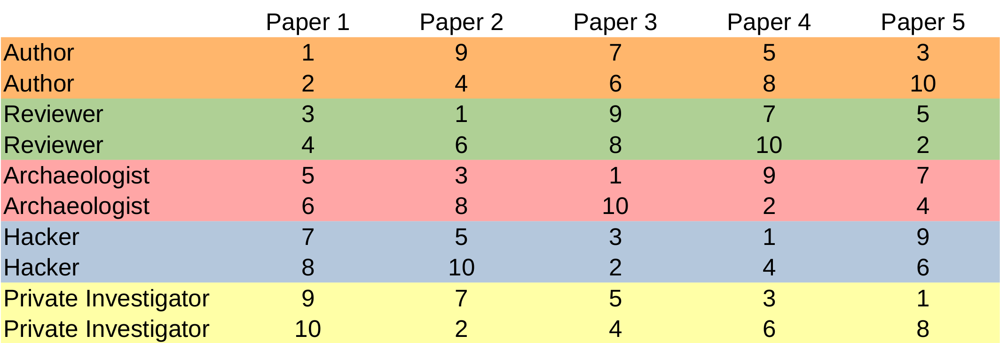

Course Information
Description
This seminar is aimed at Master’s students of Scientific Computing and Mathematics. Participants require basic knowledge about neural network architectures (e.g., fully-connected feedforward and residual networks, nothing too advanced), neural network training and basic programming knowledge, e.g., in Python. We view Deep Learning from a mathematical point of view and discuss how we can relate it back to well studied mathematical concepts. This semester the focus topic is „Operator Learning". Together we explore various aspects of the selected papers, e.g. content, authors, references, related research, etc.
The seminar will be held in a role-playing style, similar to what is described in https://colinraffel.com/blog/role-playing-seminar.html. We have selected five roles. More details on the roles will be announced during the preparatory meeting. Each participant will be assigned a number and will fill each role one time according to the schedule.
Topics
In every meeting we will study one of the following papers addressing an aspect of operator learning:
- Kovachki, Lanthaler, Stuart: Operator learning: algorithms and analysis (Operator Learning: Algorithms and Analysis)
- Lu, Jin, Pang, Zhang, Karniadakis: Learning nonlinear operators via DeepONet based on the universal approximation theorem of operators(DeepONet)
- Bhattacharya, Hosseini, Kovachki, Stuart: Model reduction and neural networks for parametric PDEs(PCA-Net)
- Petersen, Landajuela Larma, Mundhenk, Prata Santiago, Kim, Kim: Fourier neural operator for parametric partial differential equations (Fourier Neural Operator)
- de Hoop, Huang, Qian, Stuart: The cost-accuracy trade-off in operator learning with neural networks (Cost-Accuracy Trade-Off)
Exam / Presentations
For a successful completion of the seminar it is mandatory to attend all sessions. The final grade will be a weighted sum of the grades of your presentations and of your participation in the subsequent discussions.
Dates and Timeline
- Organizational meeting: April 2nd 2025 at 14:00h in Mathematikon, seminar room 10.
- Participation in this meeting is mandatory for attending the seminar.
- Due to the interactive style of the seminar it is mandatory to attend every meeting in person. There are going to be five 90-minute-sessions distributed over the semester. Meeting dates are: Wednesday 14:15h-15:45h (23.04., 07.05., 21.05., 04.06., 18.06.) in Mathematikon, seminar room 10.
If you have questions, please don’t hesitate to contact us.
(Pre-)Registration
If you are interested in participating in this seminar, please pre-register via MÜSLI, so we know how many participants we can expect. You will finally register for the class when you have been assigned a role number. We reserve the right to select students according to degree program, previous knowledge, and other criteria.